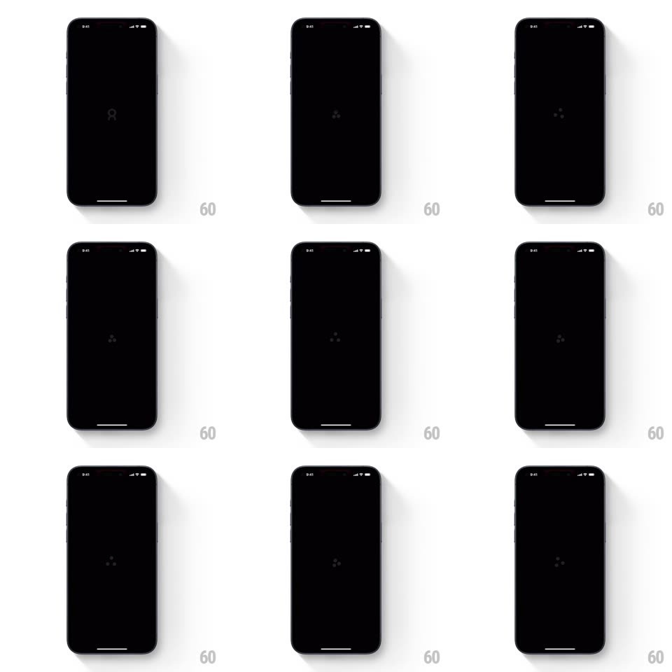

Media
Frame-by-frame

Rebuild this animation 1:1: Cobot's loading splash - the mascot logo fades into a small orbiting dot spinner on black, which runs before the screen transitions into the pricing paywall.

Rebuild this animation 1:1: Cobot's loading splash - the mascot logo fades into a small orbiting dot spinner on black, which runs before the screen transitions into the pricing paywall. ## Integration Integration: stack-agnostic spec - springs given as stiffness/damping, timed motions as duration + curve; map every value to your framework and animation library of choice. ## Scene Black splash: the Cobot mascot glyph centered, replaced by a compact spinner of orbiting dots; the sequence ends in a crossfade to the pricing paywall. ## Motion spec Pattern: logo-to-spinner morph, ~2s before transition. - Logo: the mascot glyph fades in (300ms) and holds (600ms). - Morph: the glyph dissolves (scale 1 -> 0.6 + fade, 250ms) as three dots fade in around a center point (200ms). - Spin: the dots orbit the center (one revolution per 900ms, linear) while each pulses its opacity in sequence (0.3 -> 1, staggered 300ms apart) so a bright dot chases around the circle. - Transition: the spinner scales down and fades (250ms) as the paywall crossfades in (300ms). ## Calibration - The spinner is small - a loading mark, not a hero graphic. - The chase effect comes from per-dot opacity phase, not from speed changes. ## Reduced motion Static dots; the paywall fade still runs. ## Don't miss - The morph is dissolve-based - logo and spinner never overlap at full opacity. - The orbit is perfectly circular and centered.